Stop
Come to a complete stop, yield, then proceed when safe.
Free printable DMV study sheet
Use this no-email, no-signup reference to review 31 common U.S. road signs by picture, meaning, shape, and color. Print it, mark the signs that feel slow, then practice only those groups.
Last updated:
TestDayTools printable reference
31 common signs. Read the picture first, then say the driver action before checking the meaning.
Stop, yield, entry, or prohibited movement
Warning, crossing, or road condition ahead
Regulatory rule, speed, lane, or direction
Driver service such as a hospital
These signs state laws, restrictions, right-of-way rules, or required directions.
Come to a complete stop, yield, then proceed when safe.

Slow and give the right of way when another road user has priority.

Do not enter that roadway, ramp, or restricted direction.

You are facing traffic; correct your direction safely.
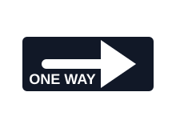
Traffic moves only in the arrow direction.
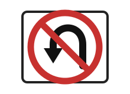
A U-turn is not allowed at that location.
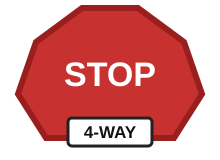
Every approach stops; use arrival order and right-of-way rules before entering.
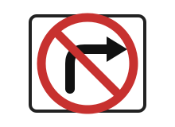
A right turn is not allowed from this approach.
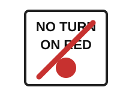
Stopping first is not enough; wait until the signal allows the turn.
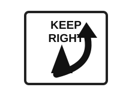
Stay to the right of an island, divider, or obstruction.
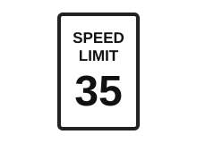
The posted number is the legal maximum under normal conditions.
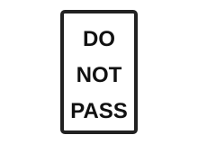
Passing another vehicle is prohibited in this zone.
These signs warn about conditions that may require lower speed, more space, or extra scanning.

Traffic may join your lane; adjust speed and space.

A lane will end and traffic must merge.
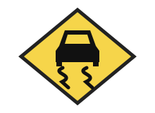
Road traction may be reduced; avoid sudden maneuvers.
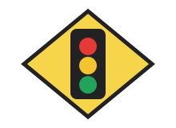
Prepare for a traffic light ahead.
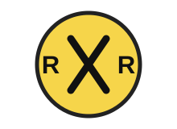
Prepare for tracks and obey crossing controls.
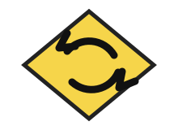
A circular intersection is ahead; slow and yield as required.
The road bends ahead; reduce speed before entering the curve.
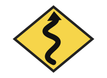
Several curves are ahead; slow down and keep steady lane position.
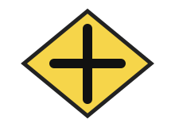
Another road crosses ahead; scan both sides for entering traffic.
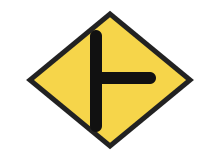
A side road joins ahead; watch for traffic entering from that side.
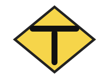
The road ends at another road; prepare to turn left or right.
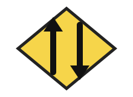
Opposing traffic begins ahead; stay right and expect oncoming vehicles.
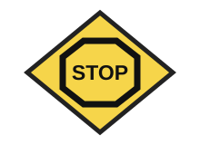
A stop sign is ahead; begin slowing so you can stop completely.
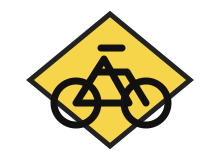
Bicyclists may enter or cross the road; slow and scan carefully.
These signs flag special areas where driver attention, lower speed, or route information matters.
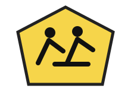
Watch for children and obey school-zone rules.
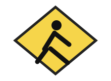
Watch for people crossing and be ready to yield.
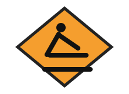
Expect temporary traffic control, workers, or lane changes.
A hospital or medical service is nearby.
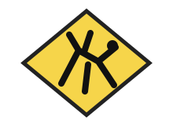
Animals may enter the road; slow and scan shoulders.
Your next review
Signs to review
Official manual section
Next quiz score____ / 40Review date____________
Say stop, yield, merge, slow, watch, or prohibited movement before reading the definition.
A short weak-sign list is more useful than repeatedly studying signs you already recognize.
Move into the 40-picture quiz, then save missed signs in your browser for another review.
This page is designed to be shared as a live, free study link. Students can open it without an account, print their own copy, and move from the reference sheet into picture practice.
Use the page URL on a class, counseling, driver-education, or library resource list so learners receive the current sheet, source note, and practice links together.
Have learners cover the meanings, name each sign and driver action, circle slow answers, then open the matching picture quiz instead of rereading every card.
The illustrations support recognition of common U.S. signs. Learners should confirm state-specific laws, wording, and permit-test requirements in their official driver handbook.
Ready-to-use classroom activity
Use the three-page Letter PDF for an independent review, teen program, homeschool lesson, or driver-education warm-up. Students identify eight original sign illustrations, answer eight driver-action questions, and record the next weak area. Page three includes the answer key and a 10-minute teaching plan.
Teachers, libraries, driving schools, families, and other noncommercial educators may print and share the unmodified PDF for noncommercial educational use when the TestDayTools credit and this page URL remain visible. Do not sell, rebrand, adapt, or include the resource in a paid product, and do not imply endorsement by a DMV or government agency.
This permission applies only to sharing the unmodified cheat-sheet PDF and classroom worksheet PDF. TestDayTools branding, site code, separate reuse of quiz questions, and separate reuse of the original illustrations are not included. All other rights are reserved.